El prólogo
Bienvenida y cata-maridaje de mezcal con productos regionales.
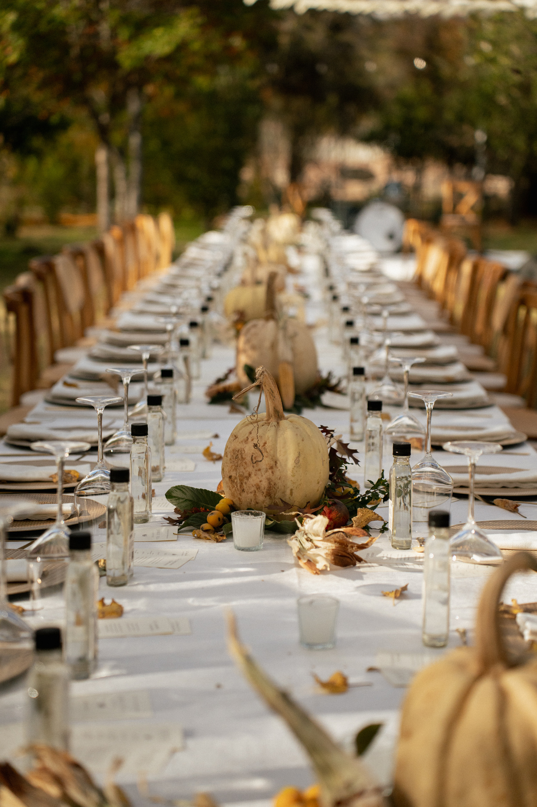
Agave y Encuadre · Edición 2026
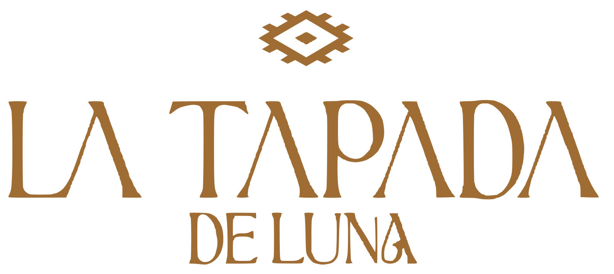
Una nueva historia
Una noche de sabores, cine y mezcal.

La experiencia
Bienvenida y cata-maridaje de mezcal con productos regionales.

Cena de asador a cuatro tiempos alrededor del fuego.

Los Faritos: raíces y ritmo, norteño y flamenco.
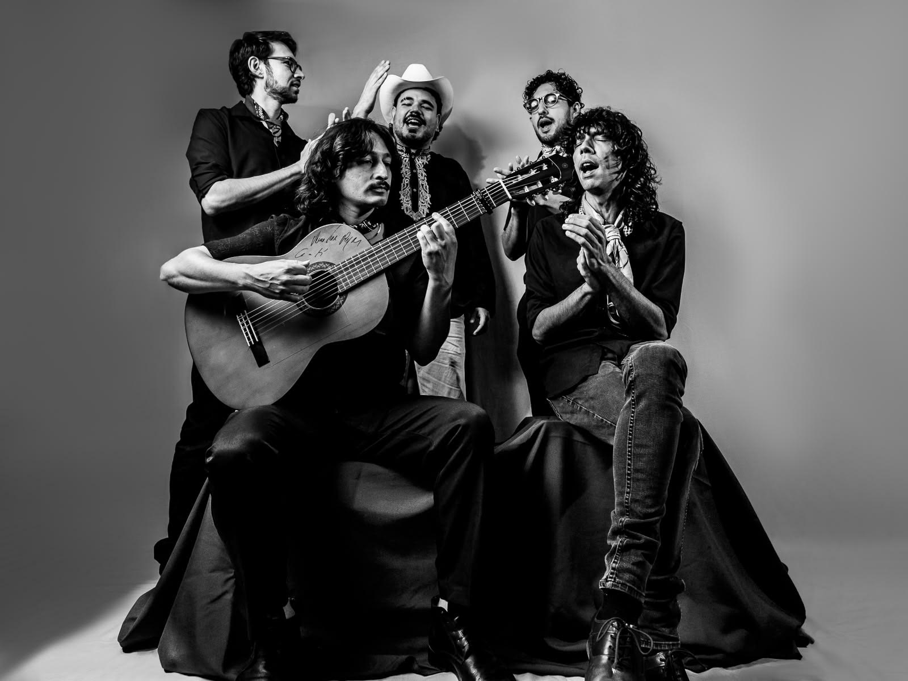
La tapada del agave: tradición, fuego, mezcal y encuentro.
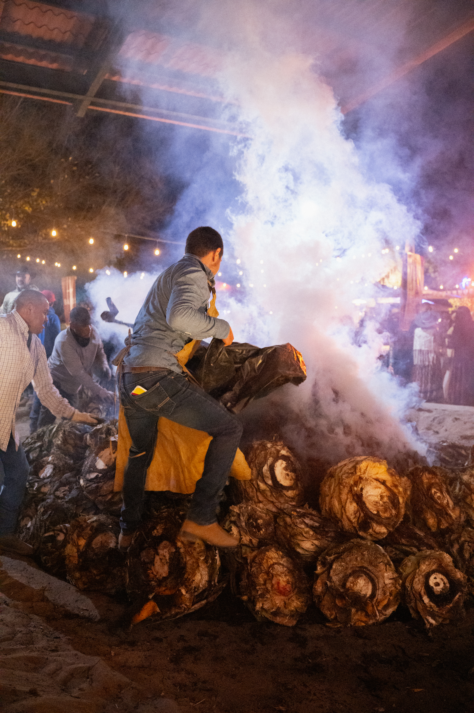
Proyecciones de Reymal Photography. Durango toma la escena.
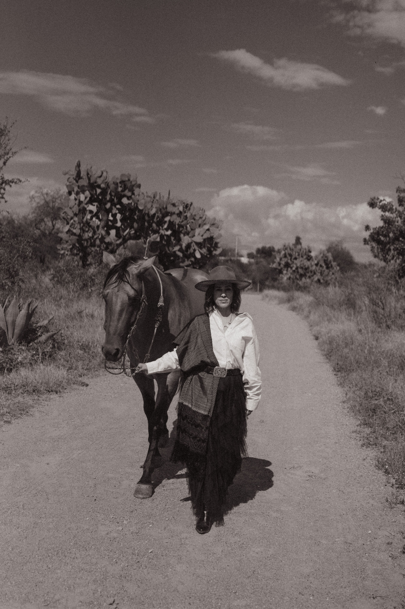
DJ Danny Khas. La música cambia el ritmo de la celebración.
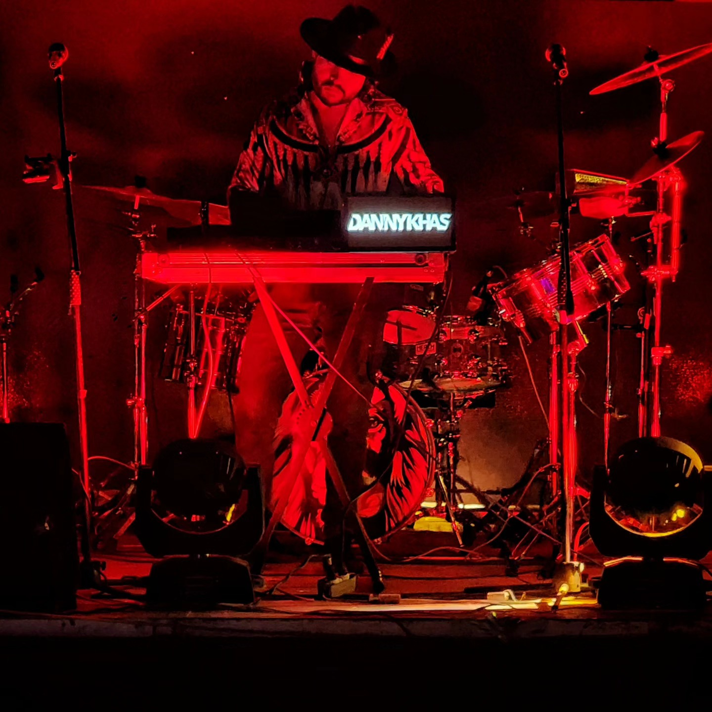
Una noche para recordar.
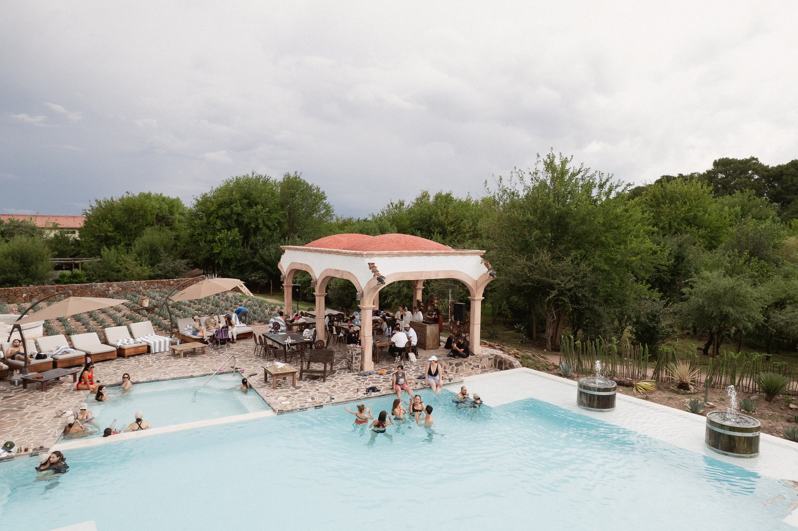
El corazón de La Tapada
En la vinata Cuero Viejo, la tapada del agave nos reúne alrededor del fuego y de una tradición viva. Conoce el momento que conecta esta experiencia con el origen del mezcal y con la tierra de Durango.
Quiero vivir esta historiaTalento
Música
Raíces y ritmo. Una presentación que cruza el norteño con el flamenco.
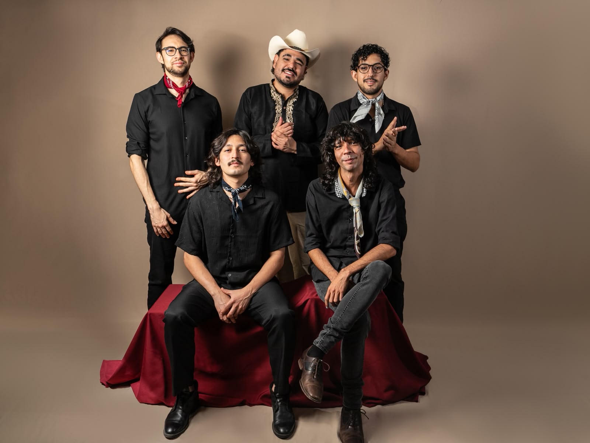
La Tapada · MúsicaDJ
El ritmo que acompaña la transición hacia la noche y sus luces.
Proyecciones
Imágenes que transforman el espacio y llevan a Durango a la pantalla durante la noche.
Gastronomía
El talento gastronómico que dará forma a la experiencia alrededor del fuego.
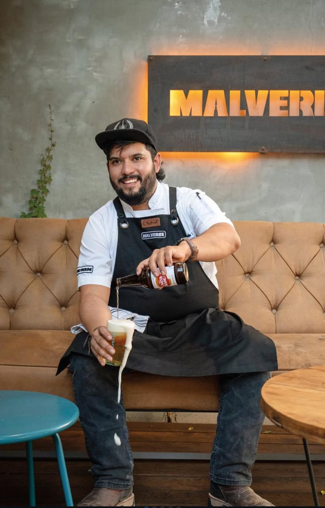
La Tapada · GastronomíaTu acceso incluye
Una experiencia completa de mezcal, gastronomía, música y ritual.
Bienvenida
Mezcal
Cuatro tiempos
4:00 · 9:30 P. M.
Ritual
Música
Reymal
Música · Noche
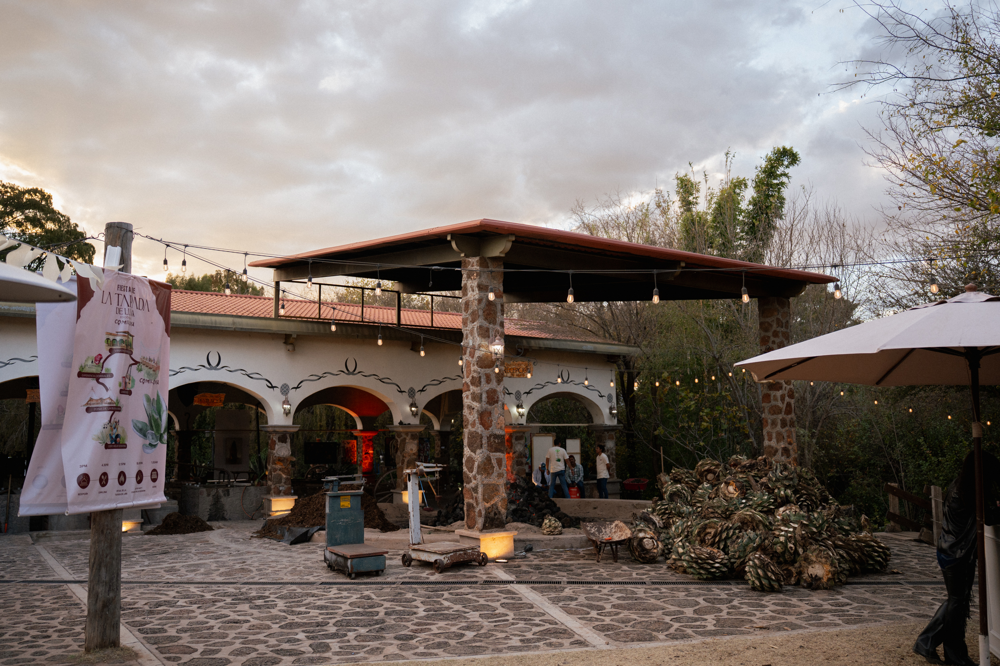
Boletos
21 Nov 2026
4:00 P. M.
Nombre de Dios
Uraján de Luna
Preventa fase 1 · $2,888 MXN
Vigencia y cargos de servicio por confirmar

Convocatoria
Jóvenes creadores
Una historia también puede contarse desde una cámara, una imagen o una nueva forma de mirar.
La Tapada de Luna abre un espacio para creadores de artes visuales, fotografía y audiovisual. Cuatro proyectos formarán parte de esta edición y serán presentados durante la experiencia.
Proyecto creativo
Mirada documental
Imagen en movimiento
Por definir
El lugar
 Nombre de Dios · Durango
Nombre de Dios · Durango
Sede
Un espacio que reúne naturaleza, arquitectura, tradición y hospitalidad en Nombre de Dios, Durango. Aquí comienza la experiencia de La Tapada de Luna.
Nombre de Dios, Durango
Uraján de Luna Hotel & Spa
21 de noviembre de 2026
4:00 P. M.
El ritual sucede en Vinata Cuero Viejo
Mapa y acceso · Por confirmar
Recuerdos
Una noche como esta no termina cuando se apagan las luces. Permanece en las imágenes, en la mesa, en el territorio y en los momentos que compartimos.